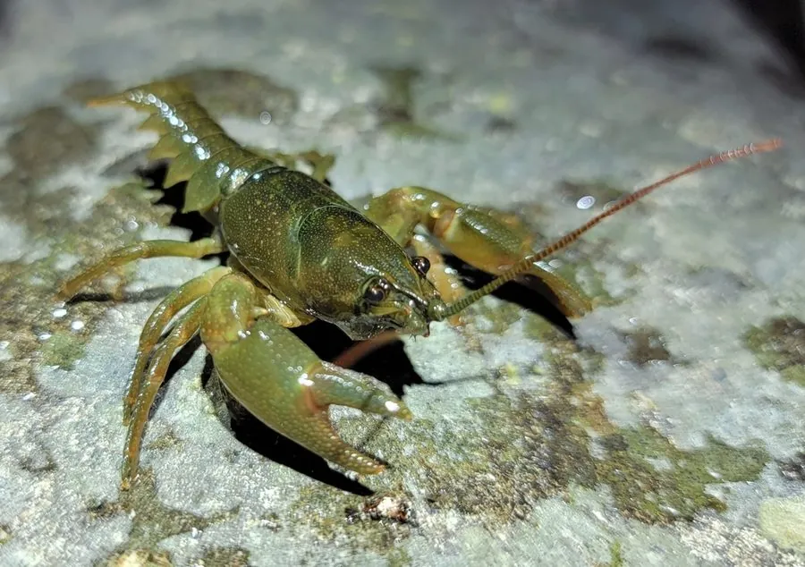

甲壳动物 · 动物界
蝲蛄 Cambaroides dauricus

中国东北的淡水螯虾，体色深褐，螯足发达，生活在清澈的山溪和河沟中，对水质敏感，是当地特有的淡水甲壳动物。
- 分类
- 门节肢动物门纲软甲纲目十足目科蝲蛄科属蝲蛄属
- 栖息环境
- 水质清澈、水流较急的山溪、河沟和湖泊边缘
- 地理分布
- 中国东北以及俄罗斯远东和朝鲜半岛
- 保护级别
- IUCN 暂无评估；中国未列入国家重点保护名录
物种志
蝲蛄体长 8–12 cm，体色深褐或暗红，头胸甲较光滑，螯足发达，表面有颗粒和棘刺；腹部宽大，尾扇发达，雌虾腹部有抱卵的腹肢。
它分布于中国东北的黑龙江、吉林、辽宁和内蒙古东部，也见于俄罗斯远东和朝鲜半岛，栖息于水质清澈、水流较急的山溪、河沟和湖泊边缘，夜间出来捕食水生昆虫、小鱼、螺类和腐肉。蝲蛄对水质变化敏感，是溪流环境质量的指示物种。它生长较慢，繁殖期雌虾抱卵，幼虾孵化后留在母虾腹下一段时间。由于栖息地破坏和过度捕捉，野生蝲蛄数量下降，需要加强保护；它常在石块下挖洞或躲藏，当地人曾把它当作食材。目前 IUCN 暂无评估；中国未列入国家重点保护名录。
形态与习性
- 食性水生昆虫、小鱼、螺类和腐肉
- 体长8–12 cm
- 识别体色深褐，螯足发达，头胸甲较光滑
- 习性夜行性，常在石块下挖洞躲藏
- 繁殖雌虾抱卵，幼虾留在母虾腹下一段时间
- 指示意义对水质敏感，可指示溪流环境质量
趣味知识
- 蝲蛄是中国东北原产的淡水螯虾，喜欢清澈的山溪。
- 它对水质很敏感，数量多少能反映溪流是否干净。
- 雌蝲蛄会把卵抱在腹下，幼虾孵化后还要跟着妈妈一段时间。